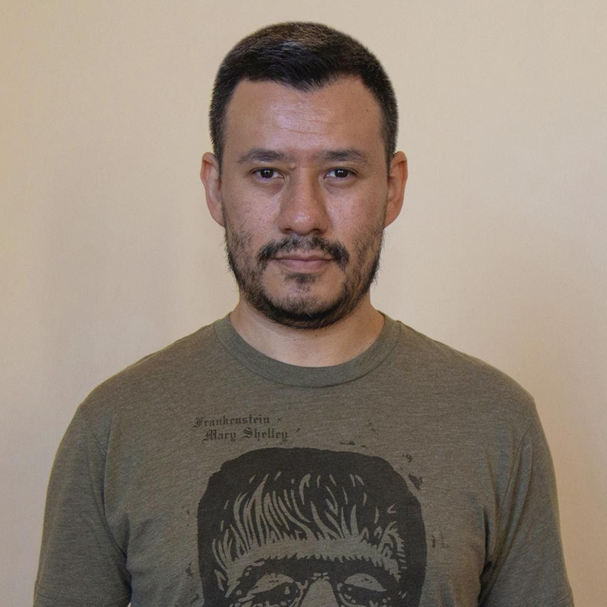

 Efraín Antonio Rivera Caravantes, mejor conocido como Efraín Caravantes, es un autor salvadoreño. Nació en San Salvador, El Salvador, el 5 de junio de 1983. Es artista visual, escritor y diseñador. Estudió artes visuales en el Centro Nacional de Artes (2006-2008) y poesía en el Taller de Poesía UTEC (2002-2004). Ha expuesto su trabajo en diversas exposiciones colectivas desde 2008 y en la individual: Semen: los moldes del azar (2015). Su obra visual y gráfica pertenece a diversas colecciones privadas en El Salvador y fuera del país. Sus textos han aparecido publicados en diversas antologías y revistas centroamericanas. Obtuvo el primer lugar en poesía en el I Certamen Letras Nuevas, La Prensa Gráfica, El Salvador (2004); el tercer lugar, junto a Javier Ramírez-Nadie, en el XI Premio de Arte Joven, Centro Cultural de España, El Salvador (2010); y los XLIII Juegos Florales de Zacatecoluca, La Paz, Ministerio de Cultura, El Salvador (2020). Como parte del Colectivo ETC, ha participado en los procesos de escritura y montaje de las obras escénicas: Ruido blanco (2016-2017) y Feas y condenadas (por estrenarse), las cuales han sido ganadoras de subvenciones públicas y privadas.
En diferentes obras ha explorado diversos temas, entre estos: la memoria, el amor, el arte y la casa como espacio de convivencia y seguridad.
| Título de la obra | Año de publicación | Género | Otros |
| Memoria de poemas | 2004 | Poesía | Primer lugar en poesía en el I Certamen Letras Nuevas, La Prensa Gráfica, El Salvador. |
| Naturaleza muerta | 2010 | Artes visuales | Tercer lugar, junto a Javier Ramírez-Nadie, en el XI Premio de Arte Joven, Centro Cultural de España, El Salvador. |
| Casa | 2020 | Poesía | Ganador de los XLIII Juegos Florales de Zacatecoluca, La Paz, Ministerio de Cultura, El Salvador. |
I
El espacio.
II
Punto. Punto. Punto… línea.
La línea recta comienza a no ser estable ni constante:
segmentos altos y bajos, zigzagueantes,
y luego vueltas,
enredos,
círculos,
espirales.
Solo estoy siguiendo la línea del mundo.
III
Líneas que van juntas y nunca se tocan,
líneas que se cortan y se vuelven rojas,
líneas que se yuxtaponen, se frotan, se abrazan,
y hacen tramas.
Solo estoy haciendo tramas:
sombras cada vez más oscuras
y reservas de espacios en blanco
para la luz futura.
IV
Solo estoy trazando algunas líneas
con mis manos.
Solo estoy borrando algunas líneas
de mis manos.
V
Estoy, entonces,
y dibujo lo que amo
como en un sueño.
VI
Solo estoy dibujando un mapa
con aguas y puentes y un tesoro enterrado,
señalado con una X.
La X puede estar en una esquina del mundo,
a la orilla de un continente,
en una isla
o en medio de mi pecho.
VII
Solo estoy dibujando mi corazón extraño,
deforme y precioso.
Solo estoy dibujando algunas letras,
algunas palabras, algunos nombres y algunos rostros,
como dios en sus primeros días.
Solo estoy naciendo de nuevo por siempre.